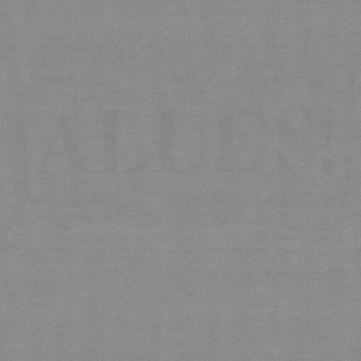

画像ファイル ALLES.enc.png と、それを作成したと考えられるプログラム challenge.py が与えられた。
challenge.py を読むと、それぞれの場所について適当なオフセットを加えた位置のピクセルの値の平均を取って出力の色にしていることが読みとれた。
そこで、逆に今ある画像の色を平均をとる元の位置に配り、平均を取る以下のプログラムを作成した。
An image file ALLES.enc.png and a program that seems used to generate the image challenge.py were given.
Reading challenge.py, I found it generating colors in the output by correcting pixels with adding some offsets and taking the average of the pixels.
Based on this, I created this program that distributes colors in an existing image to the places the colors are corrected from and takes the average.
ALLES.enc.png をこのプログラムに入力すると、以下の出力が得られた。
I used ALLES.enc.png as the input of this program, obtaining this output:

以下の画像は、入力 132 を出力 0、入力 142 を出力 81 にするように設定したものである。
I adjusted the tone curve of the image via
Configuring it to map the input value 132 to the output value 0, and the input value 142 to the output 81, I obtained this image:
この画像から気合でflagを読み取った。
I managed to read the flag from this image.